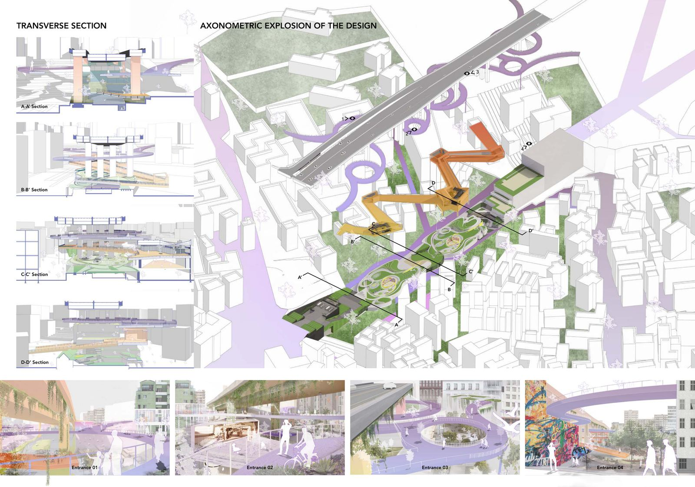
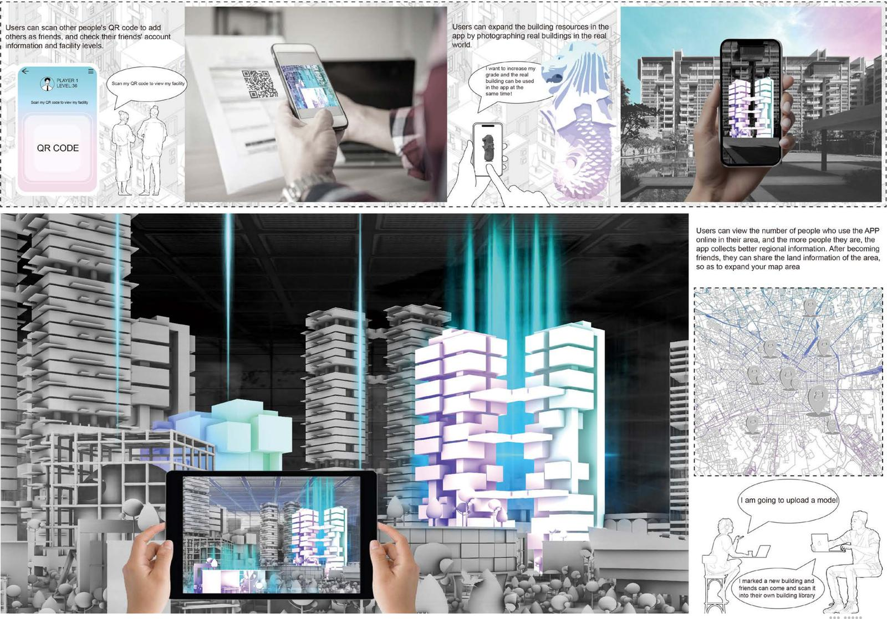

AI 产品 / AGENT
网申助手
校招网申自动填写 · 浏览器插件
把反复手填网申的麻烦做成浏览器插件：AI 调用插件填写，本人只做核对与提交；3 天迭代 15 个以上版本，适配 7 类招聘系统，已用于 13 个岗位的正式投递。
查看详情AI 产品 / AGENT
校招网申自动填写 · 浏览器插件
把反复手填网申的麻烦做成浏览器插件：AI 调用插件填写，本人只做核对与提交；3 天迭代 15 个以上版本，适配 7 类招聘系统，已用于 13 个岗位的正式投递。
查看详情
城市更新 / URBAN REGENERATION
英国曼彻斯特 · South Collyhurst
约 22 公顷、被在用铁路切开的片区，用城市农业把住宅、公共空间和社区服务重新连起来；经 3 轮迭代形成三级设计准则与 60 页 A3 成果集。
查看详情城市研究 / RESEARCH
硕士学位论文 · 曼彻斯特 Oxford Road
研究交通方式对夜间消费活力的影响：连续 15 晚、每晚 3 个时段在 Oxford Road 沿线观察；靠近火车站的场所高峰客流约为对照点的 2 倍。
查看详情
景观设计 / LANDSCAPE
本科毕业设计 · 山东青岛
获评优秀毕业作品，学院毕业设计评比第 2 名；参加 NCDA 设计大赛，环境设计方向作品获三等奖（国家级）。
查看详情展览运营 / EXHIBITION
曼彻斯特建筑学院 2026 建筑模型展
参与展览策划与布展，制作的参展模型获奖；从 0 建立在英华人社群推广展览，社群 140+ 人，带动参观 500+。
查看详情滨水更新 / WATERFRONT
英国谢菲尔德 · 小组设计
小组城市更新设计：我负责实体模型制作，承担部分图纸绘制与电子模型搭建，并完成最终效果图渲染。
查看详情
虚拟现实 / VR × URBAN DESIGN
本科课程作品 · 新加坡 Bukit Batok
以新加坡 Bukit Batok 的集合住宅为研究对象，把参与式设计和虚拟现实交互结合起来，用数字城市表达社区公共空间方案。
查看详情校园组织 / LEADERSHIP
青岛科技大学艺术学院学生会
从干事做到主席：校外招商洽谈 5 次、平均每次赞助 5000+ 元；统筹迎新、文艺汇演、体育赛事等 15+ 场活动，单场 50–1200 人。
查看详情设计实习 / INTERNSHIP
青岛中景设计咨询有限公司 · 设计助理
暑期实习中用 AutoCAD、天正建筑协助深化施工图，用 Rhino、SketchUp 建模并输出效果图，负责图纸归档与版本管理。
查看详情